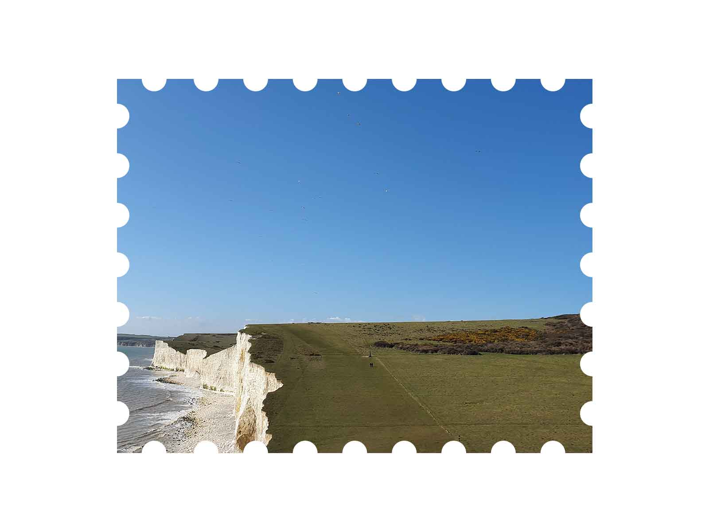
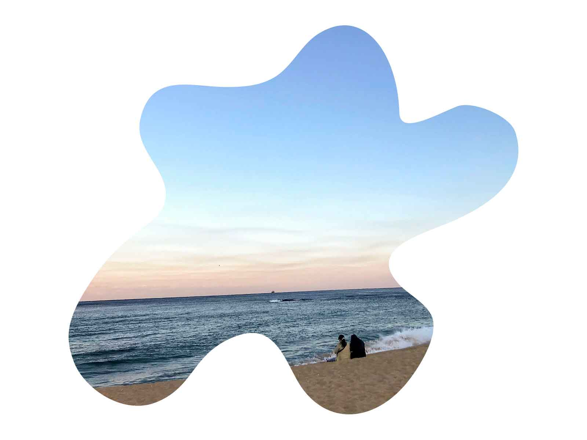
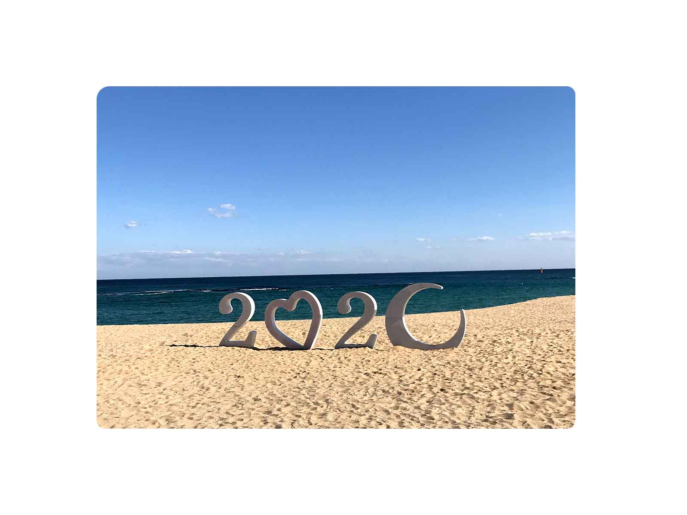
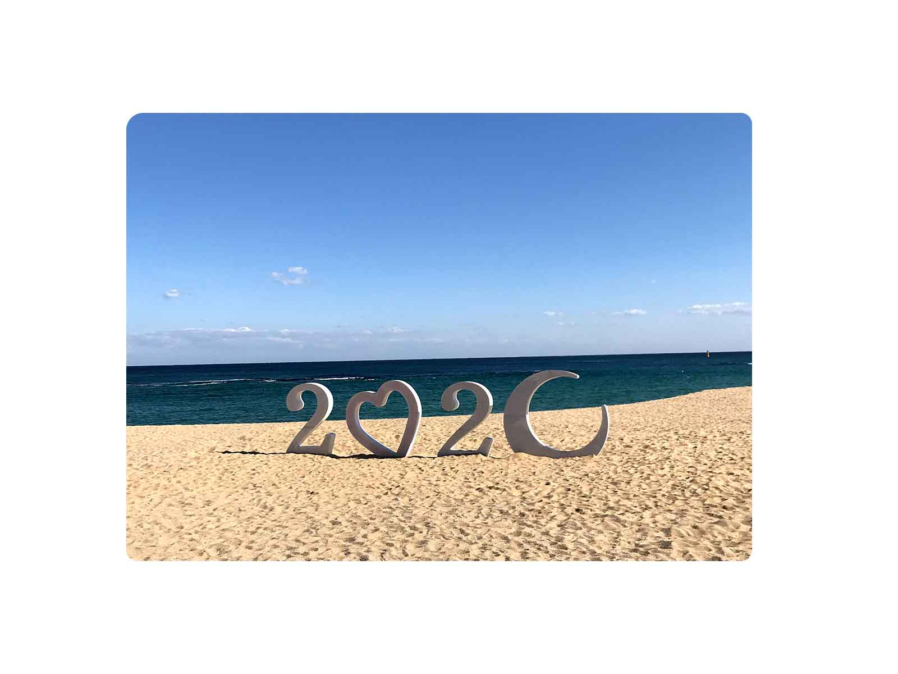
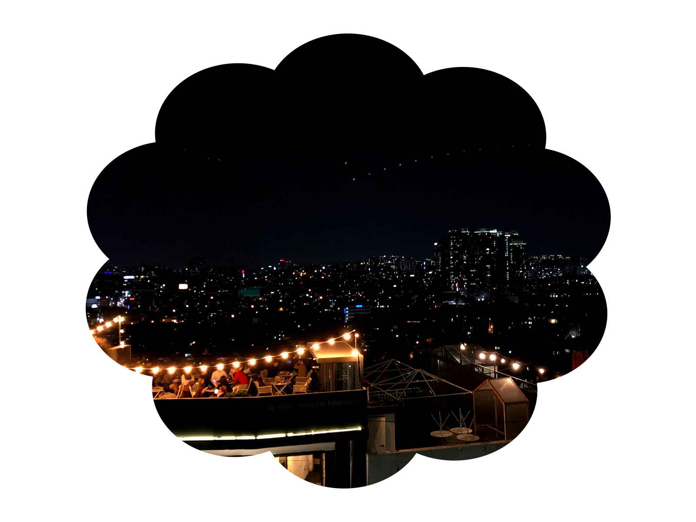
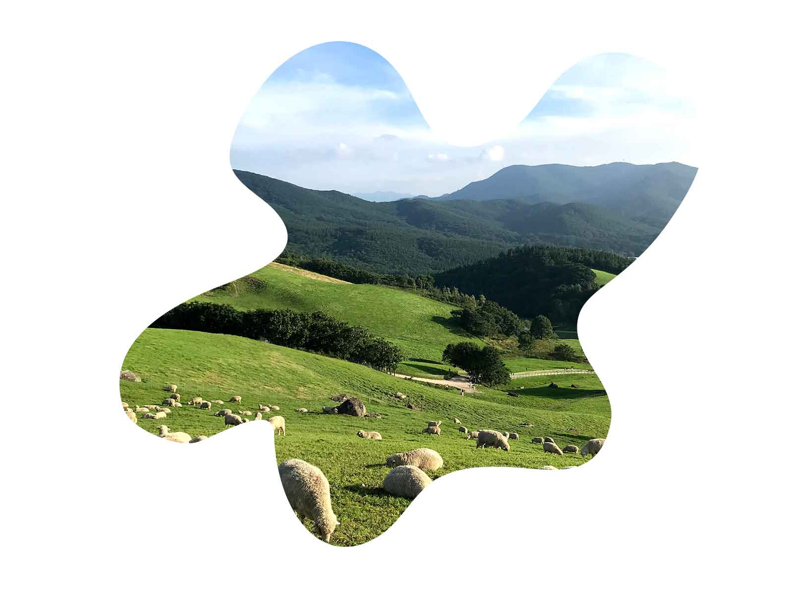
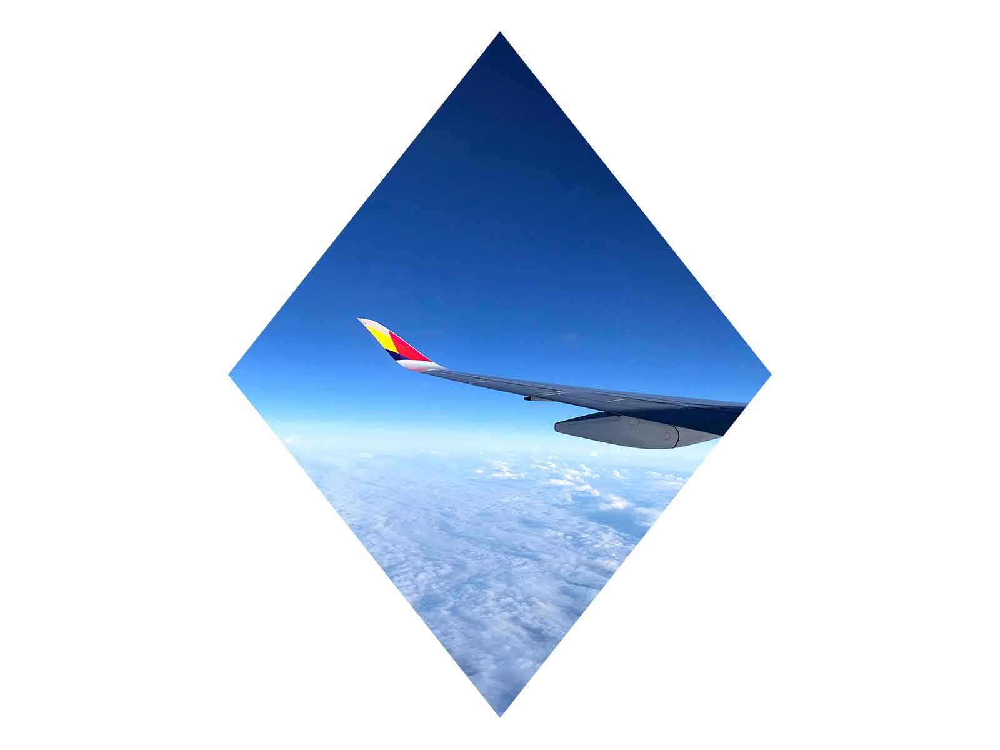
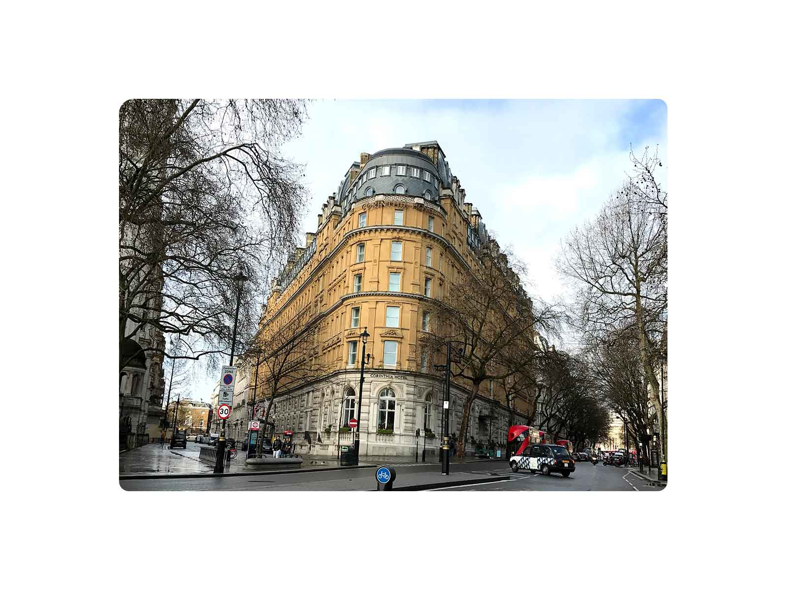
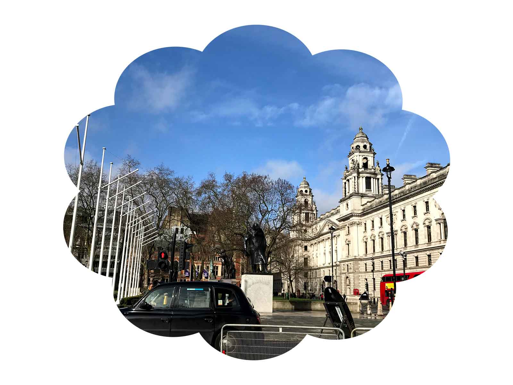
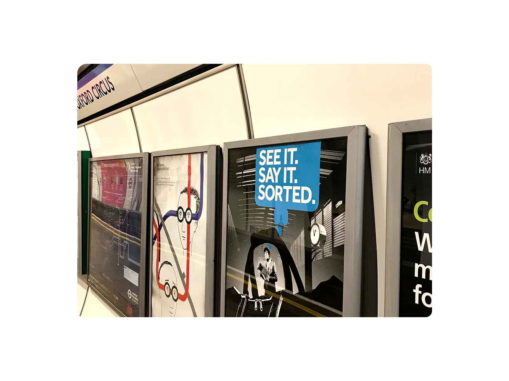

 







영국에서 찍은 사진을 소개한다.
세븐 스트링스라는 영국의 명소, 핫 플레이스이며, 하얀 절벽과 하얀 자갈들이 매우 이쁘다.
종종 놀러가는 강원도의 한 바다의 해질녘 풍경이다.
2020년을 기념하는 강원도 바다의 조형물이다. 이제 곧 얼마남지 않은 2020년이다.
방금지나간 것은 무엇일까요
짠~ 트위터입니다.
한남동의 늦은 저녁, 야경이 매우 이쁘다.
처음 풍경사진과 비슷해보이지만 우리나라 강원도이다. 우리나라도 아름답다.
비행기 안에서 바라본 하늘 위의 모습이다. 비행기를 타면 볼 수 있는 이 풍경이 너무 아름답다.
영국에서 흔히 볼 수 있는 건물 구조이다. 특이하면서도 정교해 모든 건물이 동화책 속 성같다.
영국에서 횡단보도를 건널 때에는 이런 느낌이라고 보면 될 것이다.
집으로 돌아가는 흔한 지하철 역 모습이다.